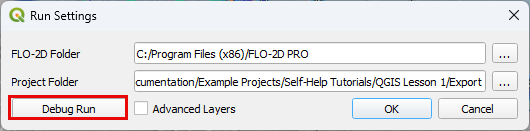

FLO-2D Plugin Settings
Important
To ensure proper execution of executables/plugins, it is essential to install the executables in the correct FLO-2D folder, the plugins in QGIS, and configure the paths accurately within the FLO-2D Plugin Settings.
The FLO-2D Plugin Settings tool has several functions:
Define the simulation path.
Connect to simulation results.
Start a Debug run.
Show hidden layers.
Define Simulation Path
Click on the FLO-2D Plugin Settings tool button.

Click on the button to select the FLO-2D PRO folder.

Navigate to the FLO-2D PRO folder.

Note
The default path is: “C:\Program Files (x86)\FLO-2D PRO”
Click OK to select the FLO-2D PRO folder.

Click on the button to select the FLO-2D Project folder.

Note
This is the folder where FLO-2D PRO is going to run and generate the *.OUT files.
Click OK select the FLO-2D Project folder.

Click OK to save the settings.

Note
The FLO-2D Project folder is updated everytime that files are exported. Double check the FLO-2D Project folder prior running a simulation.
Connect to Results
Follow the same method shown in Define Simulation Path to connect the FLO-2D Plugin to Simulation results.

Once the plugin is connected to a folder with a completed simulation, a project review system is activated.

See more info on this system here: FLO-2D Info and Results
Start a Debug Run
See Debug Tool for the Debug Run.
